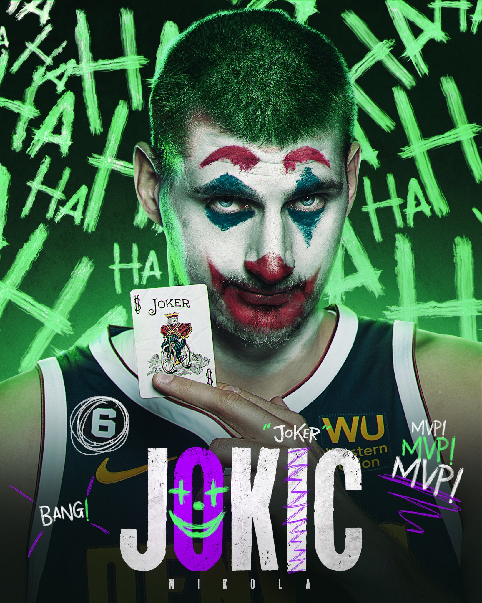

The Greatest Center in the NBA

Career Highlights
- 🏆 2023 NBA Champion
- 🏆 2023 NBA Finals MVP
- 🏅 3x NBA MVP (2021, 2022, 2024)
- ⭐ 6x NBA All-Star
- 🎯 Career averages: 20.2 PPG, 10.5 RPG, 6.6 APG
Why They Call Him "The Joker"
Not just because his name sounds similar to the famous villain "Joker", but because of his magical and unpredictable style on the court. Jokic brings joy and amazement to basketball with his unique playstyle and stunning court vision!
Fun Facts
Did you know? Young Jokic used to drink 3 liters of Coca-Cola every day! He's since kicked that habit to become the most dominant center in the league.
During the 2014 NBA Draft, when Jokic was selected, ESPN was showing a Taco Bell commercial. Who would have thought that the 41st pick would become one of the NBA's top superstars!
"I don't care about stats, I care about winning. That's what basketball is all about."